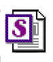

Template: Business Use-Case Model Survey
 Business Use-Case Model Survey Template |
Template for the RUP Report: Business Use-Case Model Survey. |
| Tool: | Rational® SoDA™ / Rational® Rose™ |
| Template: | No project template has been set up. Use the Rational® SoDA™ supplied Rational Unified Process Business Use Case Model Survey. |
| Specialization: | None |
Templates 
The RUP Report: Business Use-Case Model Survey for your project can be created using the Rational® SoDA™ supplied Rational Unified Process Business Use Case Model Survey Template to extract the relevant information from the Rational® Rose™ RUP Artifact: Business Use Case Model. To ensure proper creation of the report, the report should be run from within Rational® Rose™.
For details of how to run the Rational® SoDA™ RUP Report: Business Use-Case Model Survey see the RUP Tool Mentor: Using SoDA to Create a Business Use-Case Model Survey .
Related Templates
Artifact Templates:
For an overview of all the templates available to the business modeling work flow see Templates- Business Modeling.
Examples
See the RUP Examples: Overview to access any standard examples.
Related Examples
None.